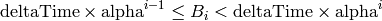

Since ToFeT is a kinetic Monte Carlo code, it treats time physically. The simulation parameter maxTime determines the maximum time a simulation should run for: the simulation may converge and finish before maxTime, but it will never run longer.
Photocurrent transients are best stored in time-bins which increase in size geometrically, so that events that happen on a short time scale are stored with greater resolution than those that happen on long time scales. The simulation parameters deltaTime and alpha determine the size and progression of these time bins. The ith bin Bi is between times:

up to the maximum time maxTime. Thus, for fine resolution at small times, and coarser resolution at large times, pick a large alpha. For finer resolution across all timescales, decrease deltaTime.